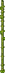
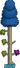

Grama
A grama permite o crescimento de muitas plantas e cobre a maior parte da paisagem acima do solo. Existem sete tipos de grama: grama normal, grama corrompida, grama carmesim, grama cogumelo, grama da selva, grama sagrada e grama de freixo.
Musgo
Musgo é uma planta semelhante à grama que cresce em Blocos de Pedra. Ele vem em várias cores diferentes e pode ser encontrado aleatoriamente em superfícies de Cavernas ou em câmaras de musgo com uma parede de musgo correspondente. O musgo produz uma penugem que pode ser cortada como ervas daninhas.
Raiz-Brilhante
A Raiz-Brilhante é uma erva comum que cresce naturalmente em blocos de terra ou lama, independentemente da iluminação ou altitude, desde que haja espaço para crescer e os blocos não tenham grama de nenhum tipo. É mais comumente encontrada na Camada Subterrânea e abaixo, devido à falta geral de grama nessas áreas. Pode ser colhida com qualquer arma ou ferramenta. A Raiz-de-Blink pode ser plantada manualmente usando Sementes de Raiz-de-Blink, que também podem ser plantadas em Vasos de Barro e Caixas de Flor. Se o bloco de terra onde a raiz piscante está plantada se transformar em um bloco de grama, a raiz piscante se quebrará, caindo como um item. A Raiz-pisca emite uma luz pulsante ("pisca") enquanto floresce. Ela entra e sai da fase de floração aleatoriamente e não possui requisitos específicos para a floração. Colhê-la durante a floração concederá de 1 a 3 Sementes de Raiz-pisca, além do item Raiz-pisca. É de longe a erva de crescimento mais rápido do jogo, podendo ser colhida segundos após o plantio. Tanto Blinkroot quanto suas respectivas sementes têm uma chance de serem obtidas na Bolsa de Ervas.
Flor-de-dia
A flor-de-dia é um tipo de erva que se apresenta como uma pequena flor amarela com caule reto. Cresce naturalmente na grama e pode ser colhida com praticamente qualquer arma ou ferramenta. A flor-de-dia também pode ser plantada em vasos de barro eCaixas de plantiousando sementes de Daybloom, ou reunidos ao derrotar Angry Dandelions. As hemerocallis geralmente crescem durante o dia. Se a cabeça amarela, semelhante a um girassol, estiver visível, a hemerocallis está florescendo e pronta para ser colhida. Se cortada durante o dia, cairão de 1 a 3 sementes de hemerocallis e 1 hemerocallis. Tanto a Daybloom quanto suas respectivas sementes têm uma chance de serem obtidas na Bolsa de Ervas.
Erva-da-morte
Erva-da-morte é um tipo de erva que se apresenta como um caule curto e murcho. Em um mundo Corrupção, ela pode ser encontrada crescendo naturalmente em Grama Corrupta e Pedra de Ébano, enquanto em um mundo Carmesim, ela cresce em Grama Carmesim e Pedra Carmesim. A Erva-da-morte também pode ser plantada em Vasos de Barro e Caixas de Plantador usando Sementes de Erva-da-morte. A erva da morte floresce durante a Lua de Sangue ou a Lua Cheia à noite (19h30 às 4h29). O horário de floração é o único em que ela deixará cair de 1 a 3 sementes de erva-da-morte ao ser cortada. A erva-da-morte terá um brilho pulsante durante esse período, facilitando sua localização. Colhê-la com o Cajado do Recrescimento aumentará o número de sementes deixadas cair durante a floração. O Cajado do Recrescimento não pode ser usado para colher a erva ou as sementes enquanto não estiver em floração. Tanto a Erva da Morte quanto suas respectivas sementes podem ser obtidas na Bolsa de Ervas.
Flor de Fogo
Flor de Fogo é um tipo de erva que se apresenta como uma pequena flor de cor magma. Cresce em Blocos de Freixo no Submundo e pode ser cortada com praticamente qualquer arma ou ferramenta. Também pode ser plantada em Vasos de Barro, Caixas de Flor ou em Blocos de Freixo usando Sementes de Flor de Fogo. As Flores de Fogo florescem ao pôr do sol, das 15h45 às 19h30, a menos que esteja chovendo. Tanto a Flor de Fogo quanto suas respectivas sementes podem ser obtidas na Bolsa de Ervas. Assim como as Sementes de Flor de Fogo, este item é imune à lava, apesar de ser de raridade branca. As flores de fogo precisam estar pelo menos parcialmente submersas em lava para florescer, mas florescerão a qualquer hora do dia depois de submersas.
Brilho da Lua
Brilho da Lua é um tipo de erva que se apresenta como um caule curvado com uma flor azul-esbranquiçada caída. Cresce na grama da selva ( selva de superfície e selva subterrânea ) e pode ser cortada com praticamente qualquer arma ou ferramenta. Pode ser plantada em vasos de barro, floreiras e sobre a grama da selva usando sementes de Moonglow. O Moonglow floresce apenas à noite, emitindo pequenas pérolas de luz branco-azulada. Durante o processo, pode ser cortado para que caiam de 1 a 3 sementes da erva. O Cajado do Recrescimento e o Machado do Recrescimento podem ser usados para aumentar a quantidade de sementes que caem ao serem cortados. Tanto o Moonglow quanto suas respectivas sementes podem ser obtidos na Bolsa de Ervas.
Flor de gelo
Flor de gelo é um tipo de erva que cresce naturalmente em blocos de neve e gelo de qualquer tipo. Pode ser colhida com qualquer arma ou ferramenta e pode ser plantada manualmente com sementes de Shiverthorn, que também podem ser plantadas em vasos de barro e floreiras. A Shiverthorn sempre florescerá após um período de crescimento e, ao contrário de outras ervas, permanecerá florida permanentemente depois disso. A Shiverthorn totalmente desenvolvida emite um efeito de partículas brilhantes. Colher Shiverthorn durante a floração rende de 1 a 3 sementes de Shiverthorn, além do item Shiverthorn. Tanto Shiverthorn quanto suas respectivas sementes têm uma chance de serem obtidas na Bolsa de Ervas.
Folha d'água
Folha d'água é um tipo de erva que se apresenta como um broto minúsculo, de cor azul-água. Pode ser encontrada crescendo em blocos de areia e areia perolada e pode ser cortada com praticamente qualquer arma ou ferramenta. No PC, console, celular, chinês antigo, tModLoader e tModLoader Legacy, também pode ser plantada em vasos de barro e floreiras usando sementes de folha d'água , que caem das folhas d'água floridas. Versão para PCVersão para consoleVersão móvelVersão chinesa antigaVersão do tModLoadertModLoader 1.3 - Versão legada A folha d'água só florescerá quando estiver totalmente crescida equando estiver chovendo ou nevando. Durante a floração, sua aparência mudará, tornando-se maior e salpicada de folhas verde-água. Uma folha-d'água em flor também emitirá pequenos globos de água. Observe que não precisa estar chovendo ou nevando diretamente sobre a planta para que ela floresça: basta que chova ou neve. Na versão para Nintendo, as plantas Waterleaf precisam estar pelo menos parcialmente submersas em água antes de florescerem e lançarem sementes. Não importa se está chovendo ou não. Versão para Nintendo 3DS. Tanto a Folha d'água quanto suas respectivas sementes têm uma chance de serem obtidas na Bolsa de Ervas.
Cogumelo
Cogumelo é um material de criação e item de cura que surge aleatoriamente na grama ou grama sagrada localizada na superfície, geralmente na Floresta. Ele pode ser cortado com qualquer ferramenta ou arma para ser recuperado. Nas versões para PC, Console, Mobile e tModLoader, o Cogumelo causa apenas 30 segundos de Enjoo por Poção, metade da duração causada por poções de cura. Mesmo assim, ele só pode curar 30 de vida a cada minuto (15 de vida a cada 30 segundos), em comparação com a Poção de Cura Inferior , que cura 50 de vida a cada minuto.
Cogumelo Brilhante
Cogumelos Brilhantes são materiais de criação que podem ser encontrados crescendo na grama-cogumelo no bioma Cogumelo Brilhante. Colher esses cogumelos pode resultar em um Cogumelo Brilhante e também pode render Sementes de Grama-cogumelo. Eles emitem luz própria, o que os torna fáceis de encontrar. Se as condições forem adequadas, Cogumelos Brilhantes Gigantes surgirão entre os pequenos. Eles podem ser colhidos com um machado para produzir vários Cogumelos Brilhantes e Sementes de Grama-cogumelo.Algumas videiras de cogumelo crescem sob a grama de cogumelo e soltam cogumelos brilhantes quando quebradas.
Cogumelo Vil
Um Cogumelo Vil é um tipo de cogumelo encontrado na grama da Corrupção, onde pode ser cortado e coletado com um único golpe de qualquer arma ou ferramenta. Cogumelos Vil não podem ser comidos nem transformados em poções; eles são usados exclusivamente para criar Pó Vil . Cogumelos Vil cultivados serão convertidos em cogumelos comuns se forem purificados com Pó de Purificação ou o Clentaminador.
Cogumelo Vicioso
Um Cogumelo Cruel é uma espécie de cogumelo encontrada na grama contaminada em The Crimson, onde pode ser cortado e coletado com um único golpe de qualquer Arma ou Ferramenta. Não pode ser comido nem transformado em poções, sendo usado exclusivamente para criar Pó Cruel. Assim como outros cogumelos, eles não podem ser cultivados em Vasos de Barro, mesmo com Gramas Carmesim. Cultivar Cogumelos Vils se tornará Cogumelos comuns se forem purificados com Pó de Purificação ou o Clentaminador. Cogumelos Vils também podem ser obtidos usando Pó Vil em Cogumelos Vils, e vice-versa. Este é o único tipo de cogumelo com um sprite de inventário diferente. Com seu caule curvo em vez de um caule reto e de perfil.
Cogumelo Verde

O Cogumelo Verde é um tipo de cogumelo que cresce nas camadas Caverna e Subterrânea. O Cogumelo Verde não será arrancado quando atacado, portanto, para colhê-lo, é necessário usar uma picareta, uma furadeira ou explosivos. Seu único propósito é produzir Tintura Verde.
Cogumelo Azul-petróleo
O Cogumelo Azul-petróleo é um tipo de cogumelo que cresce na camada Caverna. Seu único propósito é produzir Tintura Azul-petróleo.
Videiras
Trepadeiras são plantas que crescem para baixo a partir de blocos. Se houver espaço vazio suficiente, elas podem atingir um comprimento de até dez quadrados. Embora bloqueiem a luz (exceto as trepadeiras Cogumelo Brilhante, que produzem luz), elas não impedem o movimento e podem ser facilmente destruídas com praticamente qualquer arma ou ferramenta . Destruir um quadrado de uma trepadeira destrói todos os quadrados da trepadeira abaixo dela, e destruir o quadrado mais alto ou minerar o bloco em que ela está pendurada destruirá toda a trepadeira. Existem seis tipos diferentes de videiras: videiras regulares (crescendo em blocos de grama e folha ), videiras de flores (crescendo em grama em cavernas gramadas ou em frente a paredes de grama ou flores colocadas pelo jogador ), videiras da selva (crescendo em blocos de grama da selva ), videiras de cogumelo brilhante (crescendo em grama de cogumelo ), videiras sagradas (crescendo em blocos de grama sagrada ) e videiras carmesim (crescendo em blocos de grama carmesim ). Não há variante de corrupção de videiras. As videiras só podem crescer acima da superfície (com exceção das videiras da selva e cogumelo brilhante, que podem crescer em qualquer elevação) e apenas em blocos que não sejam inclinados em sua parte inferior. As videiras podem ser pintadas . Novas videiras que crescem a partir de blocos pintados assumirão a cor daquele bloco, e as peças de videira geradas por videiras que se estendem naturalmente assumirão a cor da ponta da videira existente. No Modo Difícil , as videiras Carmesim e Sagradas se qualificam como peças de expansão em relação à distribuição do bioma .Guia para Cordame de Fibra Vegetalpermite a coleta deCordas de videirade videiras. As videiras nunca droparão o objeto Videira ; este é um drop incomum de Devorador de Homens . Apesar disso, as videiras de Cogumelos Brilhantes droparão Cogumelos Brilhantes quando destruídas.
Cacto
Cacto é um material de artesanato obtido pela coleta de cactos, utilizando um machado, uma motosserra ou um hamaxe, assim como acontece com as árvores . Além da criação, o cacto pode ser usado como material de construção.
Árvores da Floresta
As árvores da Floresta são o tipo de árvore mais comum, e podem ser encontradas a crescer em relva normal. Elas podem ser plantadas na relva normal em qualquer Bioma. Elas produzem Bolotas e Madeira normal quando cortadas. Muitas Árvores da Floresta acabam por se tornar Corrompidas, de Carmim ou Sagradas se a área onde crescem for atingida por estes biomas. O crescimento das Árvores da Floresta é de 2 a 4 dias.
Árvores Decorativas
Duas variantes de árvore adicionais foram adicionadas em Journey's End: árvores Salgueiro Amarelo e árvores Sakura Rosa, que servem principalmente para decoração. Os seus rebentos respetivos podem ser comprados da Zoologista e plantadas em qualquer tipo de relva. Por instância, os seus espólios dependem da relva em que se localizam, que afetam os espólios de árvore. Se uma árvore decorativa for plantada em relva de Corrupção ou Carmim, uma das seguintes coisas pode ocorrer: O rebento vai desaparecer/cair passado um certo tempo e não produzir nada. Contudo, há uma chance de o rebento crescer antes de desaparecer; Uma árvore decorativa completamente crescida também vai desaparecer/cair, mas vai largar Madeira de Ébano ou Madeira Sombria, respetivamente, em vez de nada. Também não vai largar Bolotas ou espólios de árvore, a não ser que o jogador a corte antes de desaparecer. Se a relva de uma árvore decorativa ficar corrompida ou carmim, isto também pode acontecer. Ambos os tipos de árvore decorativa têm uma chance de 1/20 (5%) de substituir uma Árvore da Floresta durante a geração do mundo, mas não árvores da selva nem de bioma maléfico.
Corrompidas e Carmesins

Árvores corrompidas são árvores roxas encontradas na Corrupção. Elas podem ser plantados em Grama corrompida ou Areia de ébano em qualquer bioma. Elas soltam bolotas e Madeira de ébano. Se plantadas em Areia de ébano, elas terão o formato de uma palmeira, mas ainda assim saltaram Madeira de ébano. Árvores carmesins são árvores vermelhas encontradas no Carmesim. Elas podem ser plantados em Grama Carmesim ou Areia Carmesim em qualquer bioma. Elas soltam bolotas e Madeira de sombria. Se plantadas na Areia Carmesim, elas terão o formato de uma palmeira, mas ainda assim deixarão cair Madeira sombria. Em ambos os casos, se o solo abaixo de outro tipo de árvore estiver "infectado", a árvore será convertida, embora sua forma não mude. A árvore pode ser convertida de volta em uma árvore normal usando Pó de Purificação nelas; novamente, sua forma não mudará, mas, de outra forma, se transformarão no tipo de árvore apropriado para o bloco abaixo delas.
Árvores da Selva
As Árvores da Selva são encontradas na Selva e outra variante aparece na Selva Subterrânea. Árvores da Selva dropam madeira Mogno Rico, mas normalmente não dropam bolotas. No entanto, se um galho estiver pendurado sobre um bloco de grama normal, esse galho raramente pode soltar uma bolota. As árvores da Selva tendem a crescer mais alto do que as árvores normais, até 21 blocos. As Árvores da Selva na superfície crescem de duas maneiras: bolotas podem ser plantadas como a maioria das árvores, mas as Árvores da Selva também podem se autogerar, como Cacto e Cogumelos Gigantes Brilhantes. De qualquer forma, a árvore em potencial necessita do espaço horizontal usual e de um espaço livre de 24 blocos para se desenvolver. Isso torna a autogeração bastante rara, pois as plantas maiores da Selva tendem a surgir primeiro e impedem o crescimento das árvores. Antes da versão 1.4, a geração mundial e a autogeração podiam gerar Árvores da Selva submersas, mas as bolotas não podiam ser plantadas debaixo d'água. No entanto, as Árvores da Selva Subterrâneas só podem crescer durante a geração do mundo.
Árvores de bambu
As árvores de bambu são encontradas na selva. Elas só produzem bambu. Crescem naturalmente quando submersas em água. Requer uma picareta para serem colhidas, ao contrário de outras plantas semelhantes a árvores.
Árvores boreais
Árvores boreais são encontradas no bioma Neve. Elas podem ser plantadas em Blocos de Neve em qualquer bioma. Elas produzem bolotas e Madeira Boreal. Na versão para Versão para 3DS, o bioma Neve contém árvores nevadas que produzem bolotas e madeira normal. Bolotas plantadas em blocos de neve em qualquer bioma produzirão árvores nevadas.
Palmeiras
Palmeiras são encontradas no bioma Oceano e no mini bioma Oásis, e podem ser plantadas em qualquer Bloco de Areia regular em qualquer bioma, embora exijam 30 blocos de espaço aberto acima delas para crescer. Elas derrubam Madeira de Palmeira, e em Versão para Computador, Versão para Console, Versão para Celular, Versão para Switch e a versão usada pelo tModLoader bolotas também. Há também variantes Corrupt, Crimson e Hallow, que derrubam Madeira de Ébano, Madeira de Sombra ou Madeira de Pérola, respectivamente, em vez de Madeira de Palmeira. Ao contrário de outras árvores, as Palmeiras requerem apenas um bloco de areia, e apenas um espaço é necessário entre a muda e outro objeto para a árvore crescer. As palmeiras geralmente derrubam apenas uma única bolota com sua madeira. Plantar uma bolota no Deserto renderá uma Palmeira, não um Cacto.
Árvores sagradas
As árvores encontradas no Hallow têm folhagens mais altas e triangulares, e existem em diversas cores: podem ser azuis, vermelhas, verde-claras, ciano, rosa, magenta, amarelas e roxas. Podem ser plantadas em grama Hallow em qualquer bioma. Assim como acontece com Corrupção e Carmesim, árvores normais se transformam em árvores Hallow quando o Hallow as atinge, e também podem ser transformadas de volta ao replantar o solo sob elas. Árvores Hallow dropam bolotas e madeira perolada.
Árvores Cogumelos
Cogumelos Gigantes Brilhantes são tratados pelo jogo como árvores, mas eles se autogeram (a partir da grama de cogumelo , se houver espaço) em vez de crescerem a partir de bolotas. Eles crescem de forma diferente no subsolo (onde o jogador provavelmente os encontrará primeiro) em comparação com a superfície (se o jogador tomar providências). Cogumelos gigantes na superfície (acima de 0 de profundidade ) assumem uma forma mais larga e frequentemente ramificada. Quando cortados, eles produzem cogumelos brilhantes em vez de madeira. Raramente produzem bolotas ou sementes de cogumelo na superfície. Cogumelos Gigantes Subterrâneos soltam poucos Cogumelos Brilhantes (às vezes nenhum) e, às vezes, sementes de grama-cogumelo. Eles têm uma aparência diferente, sem galhos.
Árvores de gemas
Árvores de gemas são geradas naturalmente na camada Caverna e também podem ser cultivadas plantando-se uma Gemcorn em blocos de pedra nas camadas Subterrâneo, Caverna ou Submundo . Apesar de serem visualmente feitas de pedra, elas ainda exigem um machado para serem colhidas. Existem sete tipos correspondentes aos sete tipos de gemas. Mudas de gemas crescerão na mesma proporção que uma muda de árvore normal. A árvore derrubará de 0 a 5 gemas do seu tipo, de 0 a 5 grãos de gema do seu tipo e de 0 a 20 blocos de pedra quando cortada com um machado. O tipo de árvore é determinado pelo tipo de grão de gema plantado. Grãos de gema também podem ser criados a partir de uma gema e uma bolota. Árvores de gemas podem ser usadas efetivamente para coletar gemas no início do jogo, permitindo a aquisição mais rápida, embora lenta, de um cajado, túnica e/ou gancho de gemas, tornando-as especialmente úteis para jogadores de magia no início do jogo. Fornecer luz solar para as Árvores-Preciosas é desnecessário; elas crescem na mesma com tochas acima delas ou sem elas. No entanto, como elas precisam ser cultivadas nas camadas subterrâneas ou cavernas, onde não há luz natural, pode ser benéfico colocar tochas de qualquer maneira para que você possa vê-las. Árvores de Gemas podem ser plantadas em blocos de pedra convertidos, como Bloco de Pedra de Ébano e Bloco de Pedra Carmesim, mas elas crescerão e se tornarão árvores de gemas normais que derrubam Blocos de Pedra normais, independentemente de sua base.